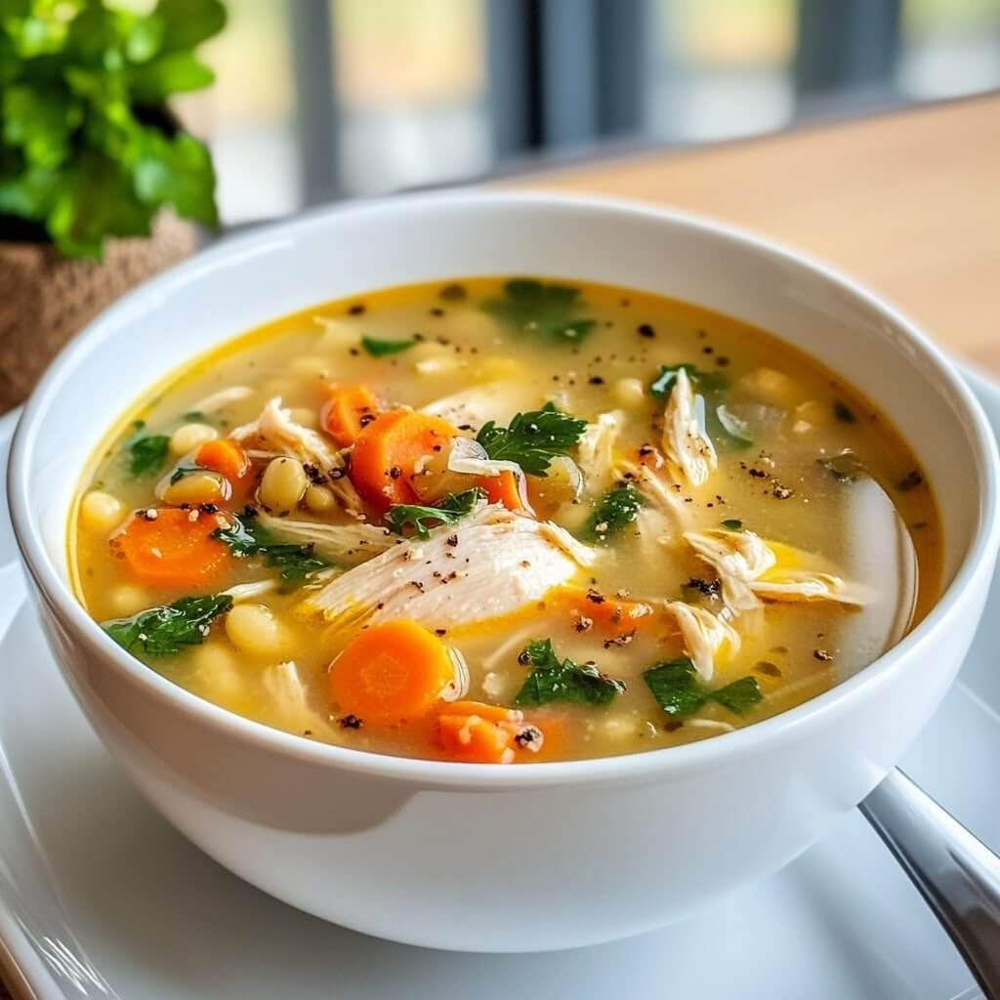

Sup Ayam

Bahan-bahan
- 500 gram ayam
- 1,5 liter air
- 1 wortel
- 1 batang daun bawang
- 2 siung bawang putih
- 1/2 bawang bombay
- Garam & lada secukupnya
Langkah-langkah
- Rebus air hingga mendidih, masukkan potongan ayam.
- Buang kotoran/busa agar kuah tetap jernih.
- Tambahkan bawang putih dan bawang bombay, masak 15 menit.
- Masukkan wortel, rebus hingga lunak.
- Bumbui dengan garam & lada sesuai selera.
- Tambahkan daun bawang, lalu sajikan hangat.